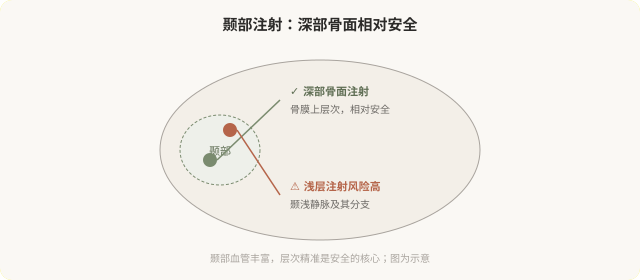

先说结论：颞部（太阳穴）和额头的凹陷能通过注射改善，但这个区域血管丰富，层次精准是安全的关键。颞部注射通常采用深部骨面支撑的方式（相对安全），浅层注射风险高。同时“饱满额头”有美学边界，过度填充会显得不自然。理解颞部注射的安全要点和美学边界，是决策的前提。
颞部凹陷的原因和改善
颞部凹陷常见于：
- 年龄性容量流失：颞部脂肪和肌肉萎缩。
- 消瘦：体重下降后颞部凹陷明显。
- 骨性基础：颞部骨骼形态。
凹陷的颞部会让人显得憔悴、显老。深部支撑性填充能有效改善颞部凹陷，恢复额头到颞部的平滑过渡。
颞部注射的安全要点

颞部解剖有几个关键点：
- 颞浅静脉及其分支在浅层走行，浅层注射易造成血管问题。
- 颞深血管在更深层，深部骨面注射可规避。
- 骨膜上层是相对安全的注射层次，能形成稳定支撑。
所以颞部注射通常采用深部骨面、支撑性填充的方式，而不是浅层铺展。这要求操作者熟悉颞部分层解剖。“颞部随便填填就行”是危险的认知。
额头注射的美学
额头注射要考虑：
- 额头形态：圆润、自然，过度饱满显得“寿星公”。
- 与眉骨的过渡：额头到眉骨的衔接要协调。
- 性别差异：男性额头与女性额头的美学标准不同。
- 动态自然：额头在表情中要协调。
过度填充额头是“注射脸”的典型表现之一。自然的额头有轻微起伏，不是完全饱满的球面。
颞部注射的风险
- 血管栓塞：颞部血管与眼动脉系统有交通，栓塞性并发症虽罕见但严重。
- 血肿：颞部血管丰富，出血风险存在。
- 不平整、触感异常：层次和剂量问题。
- 过度填充：颞部过度饱满显得不自然。
- 不对称。
- 疼痛：颞部注射痛感相对明显。
谁适合、谁不适合
适合：
- 颞部明显凹陷，影响整体协调。
- 容量流失导致的额头扁平。
- 由有经验的医生在正规机构操作。
不适合：
- 对血管风险完全不能接受者。
- 期望“完全饱满”的过度期待。
- 凝血异常、颞部皮肤感染期。
决策前的硬要求
面诊颞部或额头注射，至少做到：选择有颞部注射经验的医生；当面评估凹陷程度和骨性基础；讨论深部注射的层次和安全要点；理解血管风险和“饱满”的美学边界；确认机构备有透明质酸酶（针对透明质酸注射）。回避颞部血管风险讨论的机构，对它的安全性不够严肃。
一个美学提醒
颞部和额头的“饱满”有度。自然的年轻不是“所有凹陷都填满”，而是协调的容量分布。一个好的医生会在颞部克制，保留自然的起伏，而不是追求“完全无凹陷”。
本文用于健康教育，不能替代面诊和个体化评估；颞部注射须由熟悉解剖的具备资质医师在正规医疗机构开展。